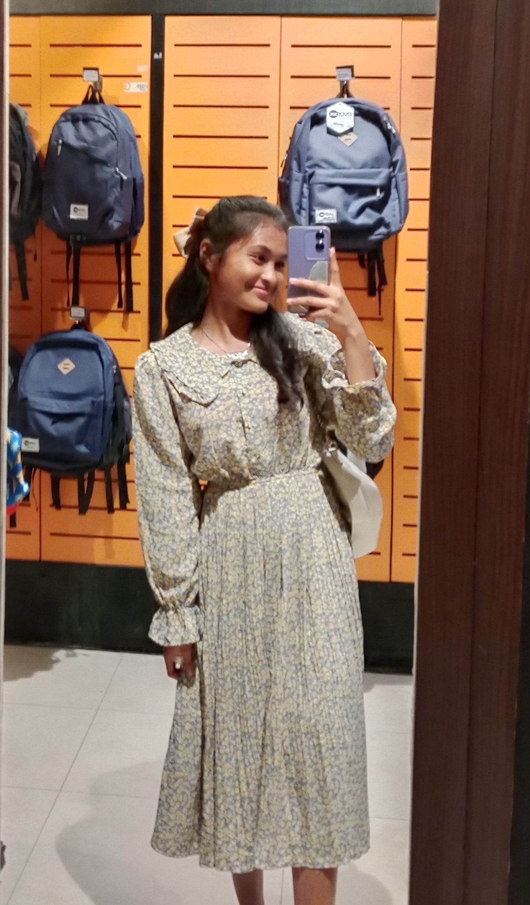

Yolita Z Sahertian
Web Programmer and Web Designer.
My Portfolio


About
Halo, saya Yolita, seorang siswi kelas 11 jurusan Rekayasa Perangkat Lunak (RPL) di SMKN 9 Medan. Sejak memasuki jurusan ini, minat dan pengetahuan saya dalam pemrograman dan pengembangan perangkat lunak semakin berkembang. Atmosfer kolaboratif di antara teman-teman sekelas sangat memotivasi saya, di mana kami saling mendukung dalam proyek-proyek pengembangan perangkat lunak dan bertukar ide untuk meningkatkan keterampilan kami. Selain itu, saya selalu mencari peluang untuk belajar di luar kurikulum, mengikuti perkembangan teknologi terkini, dan yakin bahwa semangat belajar yang tinggi akan membawa kami mencapai prestasi luar biasa di dunia teknologi. Saya berharap dapat terus berkontribusi dalam pengembangan teknologi di SMKN 9 Medan. Terima kasih atas perhatiannya!
My Skills
HTML
CSS
Javascript
Class
Projects Done
Certificate
Seminar
Contact Me
North Sumatra, Indonesia
Phone: +00 838-4678-2109
Email: vvayna@mail.com